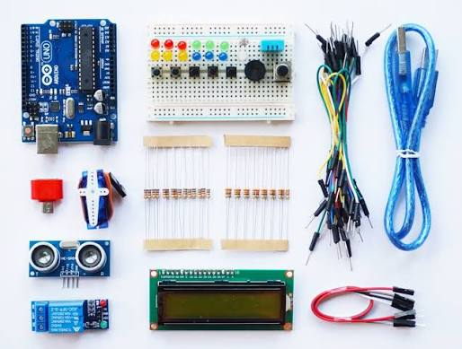
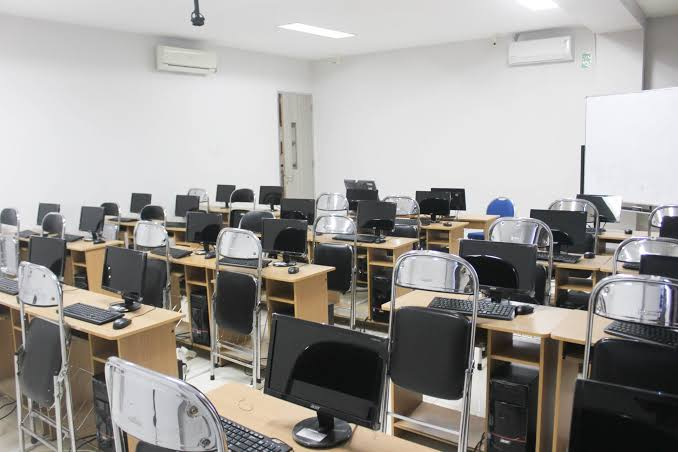
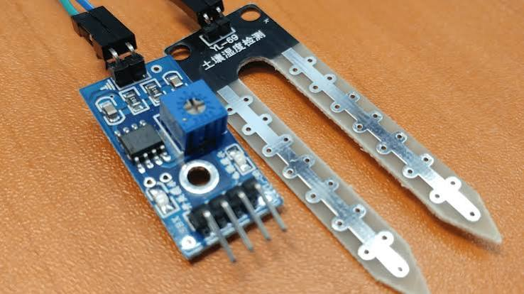

Pencatatan Peralatan

Mencatat seluruh data modul, komponen elektronik, dan perangkat keras laboratorium beserta status kondisinya secara akurat.

WebLab adalah sistem manajemen dan pemantauan inventaris resmi Laboratorium Teknik Komputer. Portal ini mempermudah mahasiswa dan asisten lab dalam mengelola peminjaman alat, mengecek ketersediaan komponen hardware, serta memantau kondisi perangkat praktikum secara real-time.
Kolom bertanda * wajib diisi.

Mencatat seluruh data modul, komponen elektronik, dan perangkat keras laboratorium beserta status kondisinya secara akurat.
Layanan pengajuan pinjam alat praktikum secara daring untuk mendukung kegiatan penelitian dan pengerjaan tugas akhir mahasiswa.

Fasilitas pelaporan cepat jika ditemukan indikasi kerusakan alat agar dapat segera dilakukan tindakan maintenance atau perbaikan.
Memiliki kendala seputar peminjaman atau butuh informasi lebih lanjut mengenai inventaris laboratorium? Silakan hubungi tim admin kami melalui kontak di bawah ini: